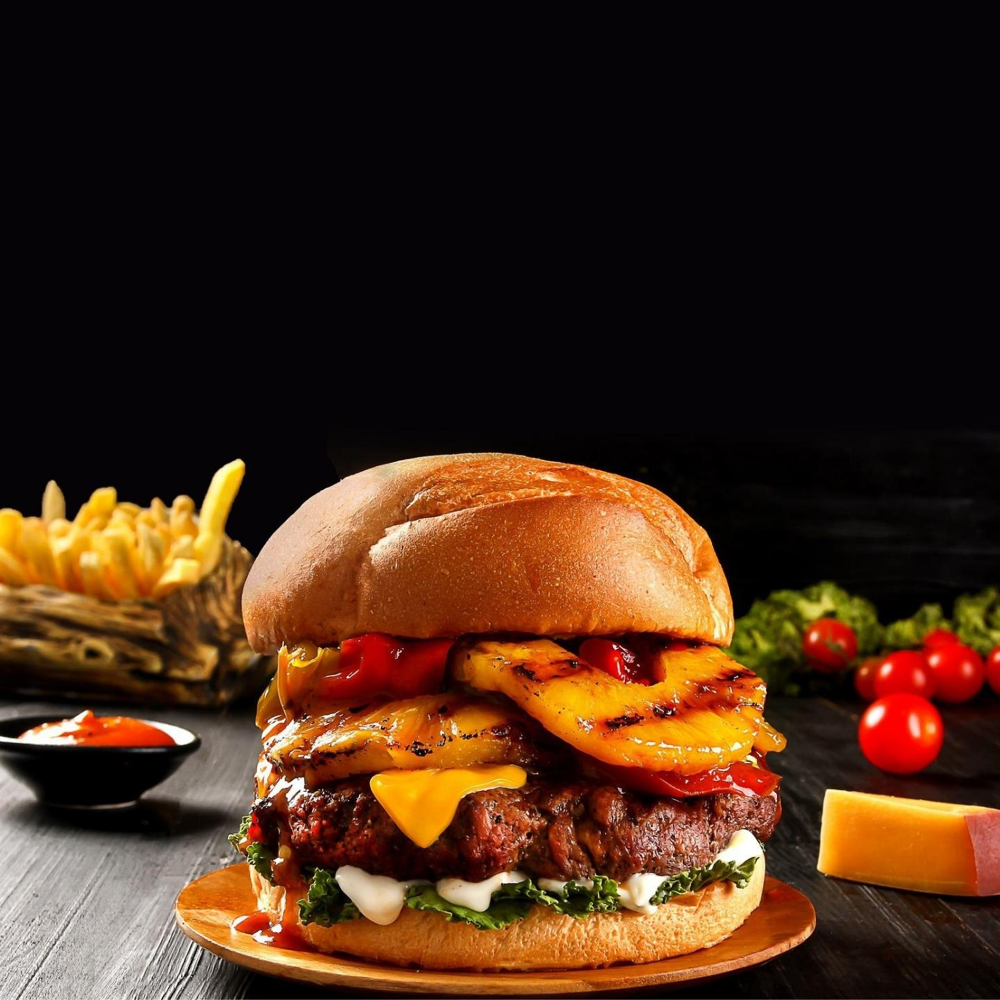

Burger

Nu suntem noi cei mai entuziaști fani ai burgerului, cu toate că în ultimii ani a declanșat o adevărată revoluție culinară, dar niciodată, absolut niciodată nu vom refuza un burger cu adevărat bun. Și prin burger bun musai înțelegem următoarele: că e plin de aromă, că simțim gustul intens al cărnii de vită, că e fraged și e suculent și că e bine cuibărit într-o chiflă delicioasă, cu mențiunea că eu am descoperit chiflele perfecte. Altfel, nici nu merită osteneala, chiftele face toată lumea. De fapt, cred că de aici ar fi de pornit, de la faptul că un burger bun nu e o chiftea oarecare.
Ca să faci un burger de casă bun, trebuie să uiți de faptul că acesta ar putea fi o chiftea, știți voi, cărniță, ouă, pâine înmuiată, usturoi etcetera. Un burger bun și suculent trebuie tratat exact ca o friptură, despre asta e vorba. Mie mi-a luat ceva timp să înțeleg asta, dar și când m-am prins cum stă treaba… hm, fără falsă modestie, nu prea se găsesc burgeri în oraș care să mi se pară mai buni decât ai mei! Încercări am mai făcut, cea mai aproape de adevăr fiind cea de Hamburger, de la chiflă la chiftea (ah, și-am zis chiftea, am zis chiftea în titlul rețetei!). Am făcut felurite încercări cu burger de curcan, burger de pui și chiar burger de somon și până la urmă toate au fost bune. Ceea ce vă propun azi, însă, este o experiență la un cu totul alt nivel.
Ingredients
- 1 kilogram de carne de vită (preferabil de la greabăn, care are proporția ideală de grăsime)
- sare și piper negru proaspăt măcinat
- 1 lingură de ulei
- 2-3 linguri de TABASCO® Chipotle sos ardei roșu
- 200 de grame de sos barbecue
- 100 de grame de sos tartar
- 5 chifle proaspete și moi
- 5 frunze de salată verde
- 5-10 rondele de ceapă
- felii de roșii proaspete și cărnoase
- alte toppinguri după gust, eu am folosit ceapă prăjită crocantă
- opțional: felii de brânză, bacon prăjit etc
Steps
- Eu am trecut carnea prin mașina de tocat de două ori, la început prin sita mai mare apoi printr-o sită mai mică. Nu am avut o bucată de greabăn, așa încât am combinat 400 de grame de spată cu 600 de grame de fleică de vită, aceasta din urmă fiind ceva mai grasă decât proporția dorită, poate cu ceva mai mult de 25% grăsime. Combinația a fost numai bună, am omogenizat cele două tipuri de carne și în final compoziția arătat așa cum se vede mai jos. Dacă s-a încălzit cumva carnea, se dă la rece înainte de modelare.
- Următorul pas a fost modelarea burgerilor. Pentru început am împărțit carnea în mod egal, în porții de câte 200 de grame, apoi am modelat discuri cu diametrul de aproximativ 11 cm și grosimea de 3,5 cm. Nu se presează excesiv asupra cărnii, doar cât este nevoie să se modeleze. Am aranjat burgerii modelați pe o suprafață plană, i-am înfoliat și i-am dat la frigider pentru 1 oră.
- Cât timp burgerii s-au odihnit la răcoare, am asezonat suplimentar sosul barbecue, care va fi în același timp glazura burgerilor. Sosul barbecue se poate pregăti acasă, eu așa fac și nu îmi lipsesc niciodată din cămară câteva borcănele. Îl fac după rețeta de aici și iese chiar delicios. De data asta, însă, am mers mai departe și am adăugat și TABASCO® Chipotle sos ardei roșu, care nu doar că l-a făcut mai picant, ci a adăugat și o tentă delicioasă de fum, de la ardeii chipotle afumați cu care este pregătit.
- Pur și simplu, în sosul barbecue se amestecă TABASCO® Chipotle sos ardei roșu, adăugându-l treptat și gustând, ca să iasă atât de picant cât ne dorim.
- Înainte de ne apuca efectiv de gătirea burgerilor, operație care nu va dura prea mult, e bine să avem deja toppingurile pregătite, în cea mai mare parte. De exemplu, eu am profitat de timpul de refrigerare ca să tai julienne două cepe de mărime medie. Le-am presărat apoi cu sare, le-am tăvălit prin făină și le-am prăjit în baie de ulei. Când ceapa a devenit crocantă, am scos-o pe hârtie absorbantă. N-am zis că am mâncat un burger de regim, de altfel! Frunzele de salată se aleg cu grijă, se spală și se zvântă, roșiile și ceapa se feliază rondele, chiflele se taie transversal în două etc.
- Am scos burgerii din frigider, apoi am pornit focul la grătar. Deasupra fiecărui burger, am aplicat puțină presiune, chiar la mijloc, formând o adâncitură. Am aflat acest mic secret dintr-un tutorial video de pe Youtube și chiar e de folos. Ajută ca burgerul să-și păstreze forma în timpul frigerii.
- Se ung burgerii cu puțin ulei și se asezonează generos cu sare și piper, doar pe partea cu adâncitura. Dacă doriți, puteți adăuga și alte condimente.
- Pe grătarul bine încins, se așază burgerii cu partea asezonată în jos. Imediat, se asezonează partea opusă, în timp ce deja sfârâie pe grătar.
- Cu niciun chip nu se încearcă să se întoarcă burgerul mai devreme de 4-5 minute din momentul în care l-am pus pe grătar! Încercând să-l întoarcem, nu vom reuși decât să-l rupem. După 4-5 minute, burgerii au făcut o crustă frumoasă pe partea expusă direct la căldură. Atunci îi întoarcem cu grijă, cu ajutorul unei spatule late. Pe partea deja gătită, aplicăm cu o pensulă specială pentru bucătărie glazura preparată la punctul 4. Punem cu generozitate, nu va aduce nimic altceva decât gust.
- După ce sunt gătiți, burgerii au nevoie de un timp de odihnă de 4-5 minute. Eu obișnuiesc să le ofer drept ”pernă” chiar chifla în care urmează să fie asamblați. Astfel, sucurile delicioase din buger vor ajunge în chiflă.
- În final, am asamblat burgerul în ordinea: baza chiflă, 1 lingură sos barbecue, salată verde, burger, ceapă și roșii, 1 lingură sos tartar și topping de ceapă crocantă. Vă recomand să fiți creativi cu toppingurile. Felii de avocado stropite cu sos de lămâie, brânzeturi diverse, toate pot adăuga savoare burgerilor. Și nu doar atât, ci și o notă personală, care vă va face mândri că ați creat propriul burger.
- Să vă fie de folos, sper să încercați rețeta și neapărat și senzaționalele chifle!
Reteta Jamila